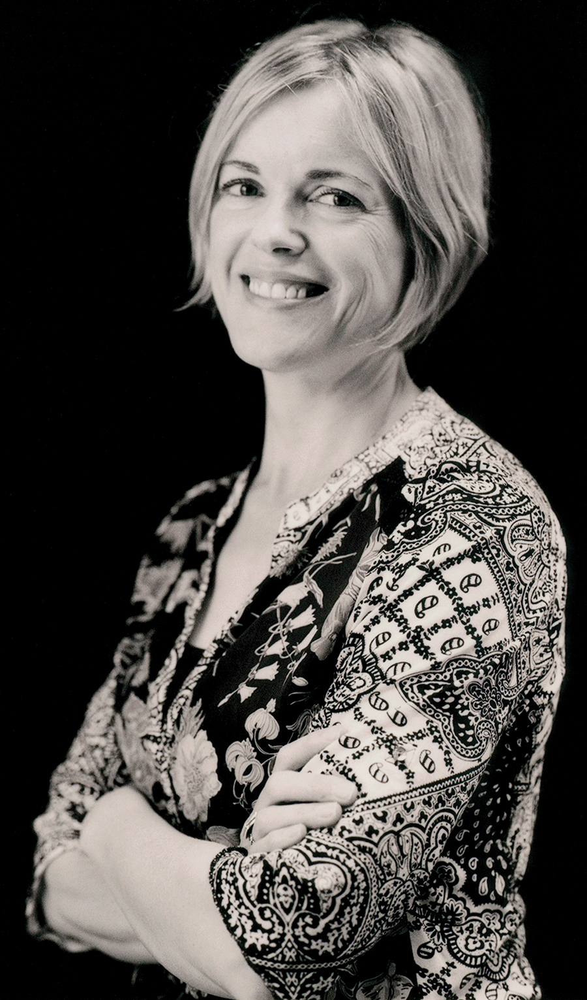
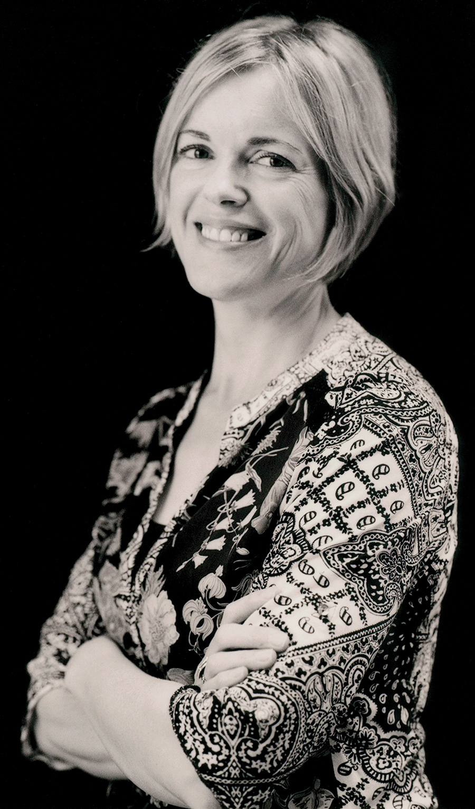

Toothpaste and a Corvette and Godzilla and a Monkey:
The Beauty of the Ordinary & Exceptional in Jay Nebel’s Neighbors
-
-
Unicorn
By Jay Nebel
When Cheryl was six her father went out
for a jar of mayonnaise
and never came home.
The reason could have been anything:
a pack of Lucky Strikes, a woman.
She told everyone in the neighborhood
her father was hunting
unicorns, his voice blood orange
and tentacled, echoing
through the bowels of the shot glasses
she lines up daily like prophets
on the bar. I want to tell her
that fathers have left their families
for far worse reasons.
What do you offer someone
who has lost half of her beginning?
Your father was a tyrant,
a minister of severed hands, a syphilis bringer
castrating the stones of animals.
Wherever he is, I promise you,
the natives are suffering.
Leaving crosses my mind, feigning
mental illness for a younger woman,
that tropical paradise of no responsibility
where mermaids reach up through silky waters
and pull off your boxers
and fire drugs into your veins.
Then a plate shatters in the kitchen
and my wife and son come banging
through the house like one of those furious parades
of dragons during Chinese New Year,
and I put my pants back on.
Once my son is asleep, my wife and I have sex
in the bedroom, not the wild
sex of Olympians thrashing around in the heavens,
but married sex, our shirts and socks
stuck to us like bandages, and, four feet from our window
the next-door neighbor strangling
the choke on his lawn mower, kicking the thing,
yelling, c’mon motherfucker, when the engine won’t start.
-
Q: Your collection Neighbors aims at connecting all walks of life, from the author foodies in “The Food Network” to the drug users in “The Happiest Place on Earth is Norway.” What makes these pieces essential to your poetic neighborhood?
A: Like most writers, I tend to write about things that catch my eye. With that poem “The Food Network” I initially started the poem because the idea of watching a whole shitload of food waving before your eyes on television seemed a little absurd to me. The poem ends up eroding into some sort of a meditation on death involving monkeys in space and how we used them selfishly to discover a small piece of that great universe above us. In “The Happiest Place on Norway” I wrote about drug users because I have a lot of experience with drug users and because I used a lot drugs. I guess I can say that with impunity now because I’ve been sober for so long. That was a different life back then, one that I revisit (in my mind and in my writing) often. I like finding beauty in the ugly and the ordinary. I also believe that there are no limits to what you can put in a poem. So in that way, everything is essential to my poetic neighborhood. If toothpaste and a Corvette and Godzilla and a monkey fit and make the poem better, then the writer should incorporate those elements in the poem.
Q: It seems that you are a poet who does not shy away from human experiences, but you revel in the struggle of it. In your poem, “Robert Frank: The Americans,” the phrase “we’ve survived” is uttered, which got me thinking about surviving. What does survival look like to you, and do you feel like your depiction of survival in poetry captures this reality effectively?
A: First, before I answer this question, I’d like to take a moment to praise Robert Frank and his book of photographs. He captured America in a way that had never been done before. His book was essential to the American experience which is interesting given that he’s not American. Maybe he was able to create this miraculous vision of our country because he was from elsewhere. I don’t know. When I first pored through his book, I was completely overwhelmed. There’s a photo in the book that I always think about of an actress at a movie premiere in Hollywood. The genius thing about the photo is that it’s a close up of the actress’ face except her face is not in focus. What is in focus is the crowd of onlookers in the background. I always thought that was beautiful. Frank obviously felt that those “ordinary people” should be the primary subject of the photograph. And I agree with him. There’s a dramatic monologue that Randall Jarrell wrote where his speaker, an elderly woman who is struggling with the idea of feeling older and invisible, says, “I am exceptional.” Like Robert Frank, Jarrell was celebrating the beauty of the ordinary in his poem, or in this case the beauty of the exceptional. I guess I frequently write about people in their most vulnerable states because I find the human struggle to be captivating. You find out a lot about a person when life gets rough. (Sorry for the Hallmark quote there.) America in the 50s was a fucked up place. Everything looked golden on the outside but inside shit was rotten as hell: segregation, racism, sexism, homophobia, paranoia about communism, awful treatment of people in mental hospitals, you name it, the model of oppression was there. In writing “Robert Frank: the Americans” I wanted to highlight that contradiction.
Q: Most of Neighbors seems to center on the collective “we,” as if we are all neighbors (lame pun intended.) In “The Importance of Story,” specifically, you connect a lot of different images, suggesting that we all have the possibility for stories, and perhaps ours are not all so incredibly different. Could you elaborate on the importance of the collective “we” in today’s world?
A: I think it was Flannery O’Connor who wrote that by the time you’re a young adult, whoever you are, you should have plenty of material to write about. I have this tendency when I’m writing to think that for a poem to be worthwhile, shit has to blow up or someone has to die or a marriage has to end. But that is the furthest from the truth. Take that poem “The Red Wheelbarrow” as example. Nothing really happens in that poem. But it’s a beautiful and wondrous poem because it’s a memorable image. Every one of us has seen or felt or heard something that is worthy of a story is all I’m saying.
Q: There seems to be an element of dark humor to your work, which I thought was beautifully displayed in “The Order of Things.” Could you elaborate on what you think humor adds to a poem, particularly dark humor? What do you think comedy adds to life’s dejection?
A: My son has now inherited my terror of spiders. I hope that it wasn’t my poem that ruined him. Growing up, I was always that kid that laughed when I wasn’t supposed to. Someone told an uncomfortable joke, I laughed. Someone got hurt, I laughed. It was my way of making sense of whatever I was feeling in the moment. That’s the way humor works in poetry for me. It’s just another way of connecting with the daily struggle. One of my favorite poets, Jose Chaves, taught me a ton about using humor in poetry. He has this poem, “Growing Up Latino,” about standing up in front of his grade school class in a giant sombrero for cultural appreciation day. I’m not doing it justice in describing the moment, but the speaker is mortified and self-conscious about this cultural obligation. The poem is heartbreaking and poignant and hilarious at the same time.
Lastly, in your collection you talk about family. What aspects of your experience with family has brought you to this place in your work?
Whenever I write, my kids and my wife are knocking on the door. Seriously, writing about family is totally unavoidable. A perfect example of a typical writing experience in my house goes like this: I sit down to write, and my eight- and five-year-old come storming into the room to announce that they’ve built a fort and I need to come and see it. Or, my wife yells at me that the dog pooped in the middle of the living room floor. Or one child comes in and complains of being scratched by the other child. And to be clear, I wouldn’t want it any other way. I love writing about my family. My kids say the craziest things sometimes. My five year old daughter told us the other day that when we die she’s going to watch whatever she wants to watch on TV. And she’s right. She will watch whatever she wants to watch when we’re gone. That’s the kind of material that drives me to write. How could you not want to write a poem after hearing something like that?
 

Find us on social media